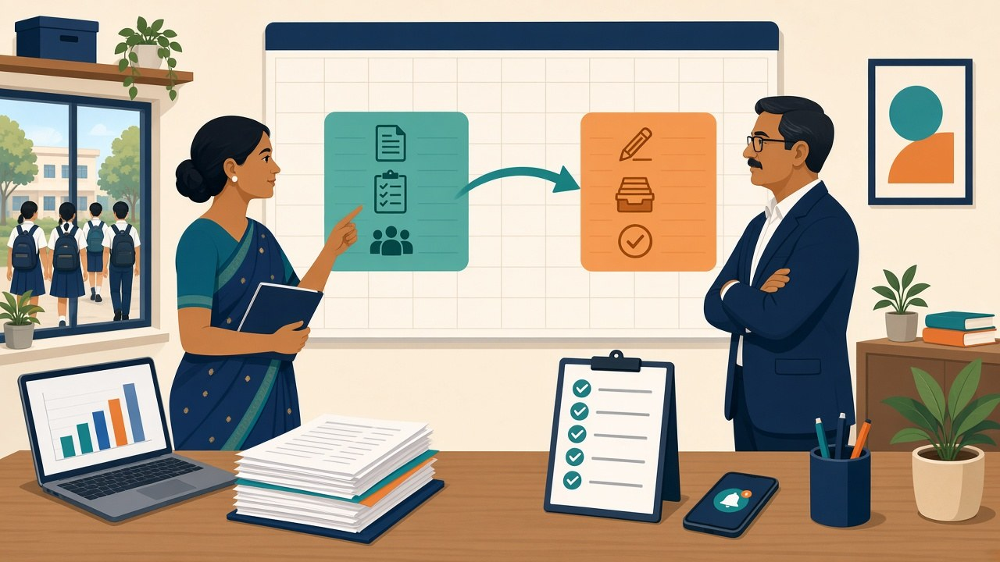

Under CBSE's two board exams for Class 10, every student must sit the first exam in mid-February. A second exam in May is optional and lets passed students improve up to three subjects out of Science, Mathematics, Social Science and languages. Internal assessment happens only once, before the February exam, and a student who misses three or more subjects in February cannot take the May exam at all.
For students that sounds like a second chance. For the school office it means two exam cycles, two lists of candidates and a lot more parent questions between February and June. This is a plan for the 2027 cycle, working back from the rules CBSE has already published.
What CBSE's two-exam scheme actually says
The rules come from CBSE's notification of 25 June 2025, which brought in two board exams for Class X from 2026, and a clarification dated 14 February 2026. The points the office has to plan around:
- The first exam is compulsory. Every student must appear in the main exam, which starts in mid-February. Its result comes out in April.
- The second exam is for improvement and compartment. It is held in May, with results in June. Passed students can improve up to three subjects out of Science, Mathematics, Social Science and languages. Students placed in Compartment in February take it under the Compartment category.
- Missing three subjects means Essential Repeat. A student who does not appear in three or more subjects in February is not allowed into the May exam. They go into the "Essential Repeat" category and can only take the main exam next February. The February 2026 clarification says CBSE will not entertain requests to skip the first exam for any reason.
- Internal assessment is done once. It is conducted before the main exam and is not repeated for May.
- Same syllabus, same scheme. Both exams cover the full year's syllabus with the same scheme of examinations.
- A separate list for May, with no new names. The list of candidates (LOC) for the second exam is filled separately, but no new names can be added to it. Subjects cannot change between the two exams except as the policy permits.
- No add-ons after passing. Additional subjects are not allowed after passing Class X, and nobody can appear in a stand-alone subject.
In the first year, CBSE took the second-exam LOC from 18 to 31 March 2026, with exam fees due within five days of the first exam's result, as the Times of India reported. Expect a similar window in 2027, but go by the circular CBSE issues for the 2027 cycle.
Why this lands on the school office, not just the students
Most coverage of the two exams is written for students: how to revise, which subjects to retake. The school carries a different load:
- The February exam has no safety net for absences. Before, a child who fell ill and missed papers could be handled through the usual compartment route. Now a student who misses three subjects drops a full year. Attendance and health problems in January matter more than they used to.
- Internal assessment has one shot. Because it is not repeated, marks have to be complete, checked and uploaded on time before February. There is no May top-up.
- There is a second list to build in March. Someone has to find out which students want to improve which subjects, check they are eligible, and submit on time, while the school is also closing the academic year.
- Parents will ask in April. Once results are out, families will want advice on whether a second attempt is worth it. Teachers need marks and attendance in front of them to answer well.
A month-by-month plan for the 2027 cycle
Adjust the dates to the circulars CBSE issues, but this order holds:
| When |
What the school office does |
| November |
Tell Class 10 parents in writing how the two exams work, especially that February is compulsory and missing three subjects means Essential Repeat. Fix the pre-board dates. |
| December |
Run pre-boards. Share subject-wise results with parents. Flag students with low marks or patchy attendance for teacher follow-up. |
| January |
Finish internal assessment for every subject, check it, and keep a record of who entered and changed each mark. Watch attendance daily and call home after repeated absences. |
| February to March |
Main exam. Track any student who misses a paper and record the reason the same day. |
| March |
Collect second-exam choices from parents in writing, check eligibility against the rules above, and submit the second-exam LOC within CBSE's window. |
| April |
First-exam results. Meet parents of students who want to improve, with their marks to hand, and confirm fee payment within CBSE's deadline. |
| May to June |
Second exam and results. Update records and share final results with parents. |
The records to keep ready for each step
Each stage leans on records the office should already have, in one place:
- A clean Class 10 roll. Names, dates of birth and subjects should match what went in the main LOC, because no new names can be added to the second list. Our CBSE LOC checklist and guide to CBSE name and DOB corrections cover this.
- Pre-board and internal assessment marks by subject. These help teachers advise which subjects, if any, are worth a second try.
- Daily attendance with reasons for absence. Medical or other reasons for any February absence should be on file the same day. The CBSE 75% attendance rule already needs this.
- Written parent consent for the second exam. Keep each family's subject choices in writing, not just a WhatsApp reply in a group.
- A record of every notice sent. If a parent later says nobody told them about the Essential Repeat rule, you want the dated notice and proof it reached them.
What to tell parents, and when
Three messages cover most of the confusion:
- In November: "Your child must appear in every February paper. If they miss three or more subjects, they cannot take the May exam and will sit the full exam next February. Please tell the class teacher at once about any illness."
- After pre-boards: subject-wise marks, plus an invitation to meet the teacher if the child is struggling.
- When first-exam results are out: which subjects can be retaken, the school's deadline for a written choice, and the fee date CBSE has set.
Send them through a channel where you can see who opened and acknowledged the message, not only a group chat where notices scroll away. Our post on moving from WhatsApp PTA groups to structured acknowledgements explains why.
Where ConnectEdu fits
ConnectEdu does not replace CBSE's own portal for the LOC or exam fees, and it does not predict board results. What it gives the office is the record-keeping around them, in one system:
- Exams and report cards. Pre-board and internal marks go into the exam module, and results reach parents in the parent app.
- Attendance with parent alerts. Daily attendance sends push notifications to parents, so an absence in January or February is noticed the same day.
- Notices in the parent app. Exam rules, timetables and deadlines go out as notices instead of messages lost in a group.
- An audit log. Edits to marks, attendance, fees and student details are logged, which helps when you need to show who entered or changed an internal assessment mark.
- The Admin AI Agent. A principal can ask questions like "which Class 10 students missed more than five days in January?" Answers come from live school data via secure database queries. You can ask in any language, and answers come back in English. Today the agent searches and answers; it does not send reminders or take actions.
Frequently asked questions
Is the second CBSE board exam for Class 10 compulsory?
No. Only the first exam in mid-February is compulsory. The May exam is optional and is for passed students who want to improve up to three subjects, and for students placed in Compartment.
Can a student skip the February exam and take only the May exam?
No. CBSE's clarification of 14 February 2026 says every student must appear in the first exam. A student who misses three or more subjects in February is placed in Essential Repeat and can only take the main exam the following February.
How many subjects can a student improve in the second exam?
Up to three, chosen from Science, Mathematics, Social Science and languages.
Is internal assessment repeated for the second exam?
No. Internal assessment is done only once, before the main exam, so it has to be complete and accurate before February.
Can a school add a new student to the second-exam list?
No. The second-exam LOC is filled separately, but CBSE does not allow new names to be added to it, and subjects cannot change between the two exams except as the policy permits.
When are the results of the two exams declared?
Under CBSE's scheme, results of the first exam come out in April and results of the second exam in June.
Run both Class 10 board exam cycles from one set of records
ConnectEdu keeps exam marks, daily attendance with parent alerts, parent-app notices and an audit log of edits in one system, so the office can plan pre-boards, internal assessment and the second-exam list without chasing registers. Book a ConnectEdu school demo, or log in if your school is already on ConnectEdu.
By ConnectEdu Team
Back to Blog